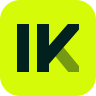
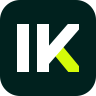
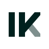
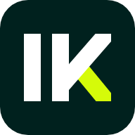
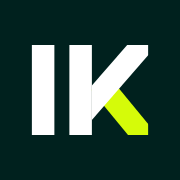
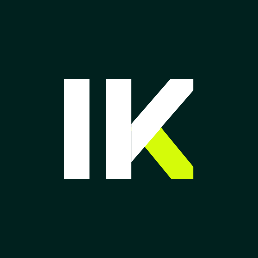
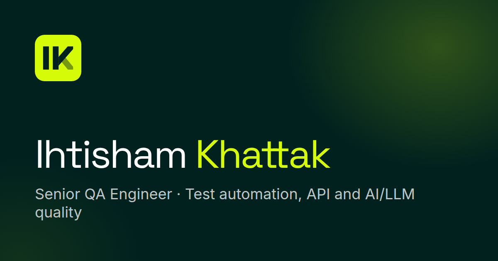

Abyss Green
Ground. The dark theme background and the primary logo tile.
- HEX
- #00211E
- RGB
- 0, 33, 30
- HSL
- 175°, 100%, 6%

Three colors, three typefaces, one monogram. Precise, trustworthy, detail-obsessed, but not boring: the system behind the portfolio, written down so it stays consistent.
A white I and K with the K's lower arm in Electric Lime. The geometry never changes; only the ground does.

Primary
On white and light grounds
Inverse
On Abyss Green only

Single color, Abyss
On lime or white, one-color print
Single color, white
On Abyss, photos and video
Keep a margin of one quarter of the mark's width on every side.
Every surface and text tint on the site is a mix of these three. Lime is a fill and a dark-ground text color: on white it is 1.19:1, so it never carries text there.
Ground. The dark theme background and the primary logo tile.
Text on dark, the light theme background, the logo letterforms.
Accent. Primary buttons, highlights, underlines, the inverse logo tile.
Lime stays at about a tenth of any screen: buttons, one underline per paragraph, the logo tile. That scarcity is what makes it work.
| Pair | Contrast | WCAG | Use |
|---|---|---|---|
| White on Abyss | 16.99:1 | AAA | Body text, headings (dark) |
| Lime on Abyss | 14.26:1 | AAA | Accent text, links, key figures (dark) |
| Abyss on Lime | 14.26:1 | AAA | Text on primary buttons, badges, highlights |
| Abyss on White | 16.99:1 | AAA | Body text, headings (light) |
| White 74% on Abyss | 9.68:1 | AAA | Secondary text (dark) |
| White 60% on Abyss | 6.77:1 | AA | Tertiary text, captions (dark) |
| Abyss 74% on White | 7.33:1 | AAA | Secondary text (light) |
| Abyss 70% on White | 6.38:1 | AA | Tertiary text, captions (light) |
| White on Lime | 1.19:1 | Fails | Never |
| Lime on White | 1.19:1 | Fails | Never as text. Fill and underline only |
| Abyss 74% over white (text-muted, light) | #425B58 |
| Abyss 70% over white (text-faint, light) | #4D6462 |
| White 74% over Abyss (text-muted, dark) | #BDC5C4 |
| White 60% over Abyss (text-faint, dark) | #99A6A5 |
| Surface, dark (white 5% over Abyss) | #0D2C29 |
| Surface, light (Abyss 4% over white) | #F5F6F6 |
| Lime hover, dark | #E0FC46 |
| Lime hover, light | #BBE10C |
One color sits outside the palette on purpose: a functional red for failed checks and the 404 page (#FF8A7A on dark, #B53424 on light). Nothing decorative uses it.
Space Grotesk speaks, Inter explains, JetBrains Mono measures. All three are free on Google Fonts.
Headings · Space Grotesk 400 / 500
I find the bugs before users do.
Body · Inter 400 / 500
Senior QA Engineer crafting reliable software through test automation, API testing, and AI/LLM quality assurance.
Labels and figures · JetBrains Mono 400 / 500
✓ auth › login with valid credentials (412ms)
5 passed · coverage 95.4%
The recurring pieces. Headlines are two-tone: white, then lime on dark or a lime highlighter on white.
Buttons and pill
Verification stamp states
Key phrases get one underline
Hire a QA engineer who finds the bugs before users do, and who automates the boring half.
On white
An outer ring around an inner card: radius 28 / 20, hairline borders, a 7% lime tint from the top left.
Radii
Motion
Fade and 16 px rise, 500 ms, staggered by 60 ms. Everything stops under prefers-reduced-motion.
The SVG favicon switches itself: Abyss tile on light browser chrome, lime tile on dark.




Everything is a plain file. Tokens are available as CSS custom properties and JSON.